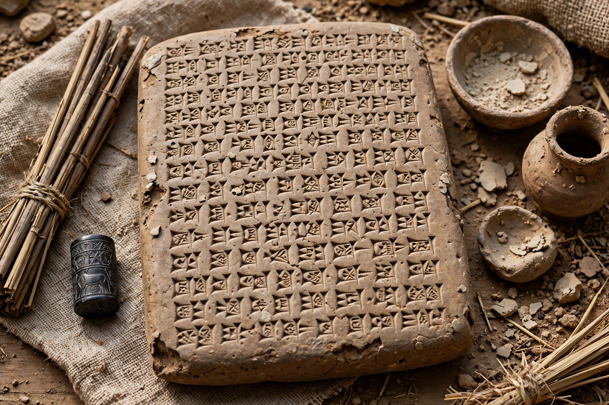

Sîn-lēqi-unninni
Sîn-lēqi-unninni (Akkadian: 𒁹𒀭𒌍𒋾𒀭𒈾𒉌𒂖, Sîn-lēqi-unninni, "O Sîn, accept my prayer") was a Mesopotamian scholar-priest (mašmaššu, incantation priest) who lived between roughly 1300 and 1000 BC. Mesopotamian tradition credited him with compiling the standard, twelve-tablet version of the Epic of Gilgamesh — making him one of the earliest named authors or editors in world literature.

| Sîn-lēqi-unninni | |
|---|---|
| Flourished | c. 1300–1000 BC |
| Occupation | Incantation priest, scholar, scribe |
| Known for | Standard version of the Epic of Gilgamesh |
Attribution
A late Babylonian catalogue of texts and authors names Sîn-lēqi-unninni as the scholar responsible for the Gilgamesh series. Working from older Sumerian poems and Old Babylonian versions, he shaped the epic into its classic form: he added the famous prologue praising Gilgamesh, wove in the flood story of Utnapishtim — the Mesopotamian counterpart of Noah — and gave the poem its thematic frame about wisdom gained through the quest for immortality. Later texts remember his descendants as a scribal family of Uruk claiming him as their ancestor.
Legacy
The version associated with Sîn-lēqi-unninni became the canonical text copied in libraries across Mesopotamia, including the library of Ashurbanipal at Nineveh, whose tablets — famously deciphered in the 19th century by George Smith — preserved the epic for the modern world.